Chapter 4: CYCLIC VEGETATIONAL CHANGE
It is commonplace to regard vegetation which is stable and in equilibrium with its environment as a static entity, which having gone through various stages of succession has finally reached an ultimate level of stability and ceases to change any further. This superficial impression is misleading since in addition to the external environmental factors which regulate the over-all composition of the vegetation, there exists a series of intrinsic factors which continues to induce vegetational change. This intrinsic vegetational change is not manifested as a continuation of succession but as a cycle of events at any particular point in a community. These events are replicated many times over the whole of the community, and are apparent as a series of phases present at a number of points at any instant in time. The over-all summation of these phases constitutes the composition of the community. Thus while plant succession is a directional change, cyclic changes represent fluctuations about a mean value.
Hummock and hollow cycle
Watt (1947a) outlined a number of examples of cyclic fluctuations containing several marked phases which are now regarded as classic examples of cyclic change. The regeneration complex which occurs on actively growing raised bog (the "hummock and hollow cycle' as it is often called) is an outstanding example of a series of dynamic phases which are related to each other in time. The phases form a mosaic of patches. each at a different stage from its neighbours. Oswald (1923) and Godwin and Conway (1939) have shown the relation of the phases to each other by examination of the stratigraphy of the underlying peat. The initial phase is represented by Sphagnum cuspidatum which invades small pools of water. This species is invaded by S. pulchrum which in turn is replaced by S. papillosum. The latter species build up low hummocks which are eventually colonized by Calluna vulgaris, Erica tetralix, Eriophorum vaginatum and Trichophorum caespitosum. At a later stage the lichen species Cladonia arbuscula (C. sylvatica) enters the sequence, each sequence being abundantly preserved as stratified deposits of peat. At this stage the sequence is identical to a micro-succession' and each of the subsequent stages is dependent on the reactions on the environment by its predecessors. However, as the Calluna ages and dies the hummock is eroded and a pool of open water re-established largely by the activity of the adjacent phases building up hummocks. Thus, under these conditions, an area of raised bog is a mosaic of patches each of which represents a phase of a cycle; each patch will progress eventually and repeatedly through the same cycle of events and although a given (small) area will change over a period of time the whole community remains essentially the same.
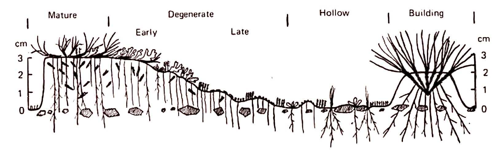
A similar example is drawn by Watt from grassland, where the vegetational variation is related to microtopography. Four phases are present, descriptively termed 'hollow', 'building', 'mature' and ‘degenerate' (Watt, 1940). The hollows are invaded by seedlings of Festuca ovina around which accumulates a variety of wind-borne particles in addition to humus remains of the parent plant. Over a period of time a small hummock is formed, representing the 'building' phase (Fig. 4.1). In the mature phase the hummocks reach a height of about 4cm and are colonized by several lichen species notably Cladonia alcicornis and C. rangiformis. The lichen species slowly assume a more dominant role in the early stages of the 'degenerate" phase and are gradually replaced by crustaceous lichen species. Erosion of the hummock follows completing the full cycle of events back to the 'hollow' phase. Again the over-all structure and composition of the community remains unchanged since each phase is represented by a mosaic of cyclic units related spatially to each other as well as representing a time sequence.
The occurrence of cyclical phases is not restricted to perennial herbaceous species and Watt (1947a) also describes a cyclical development which occurs over a long period in beech woodland on chalk plateau. Following the death of a full grown tree the gap that is left is initially devoid of vegetation and represents the first phase of the cycle. This is invaded initially by Oxalis and subsequently by Rubus, representing the next two phases of the cycle. Concurrently beech and ash seedlings become established forming a reproduction circle' (Watt, 1925) with the ash in the centre surrounded by a circle of young beech originating from seed shed by the surrounding mature beech. Eventually the ash is over-topped by the beech saplings and the gap finally closed. The cycle is finally completed by the ultimate degeneration and death of the beech colonizers initiating the same cycle again. The time scale in this example is very long but the nature of the process is identical.
In general the sequence of events is similar in all the examples given by Watt (1947a) and these he descriptively terms pioneer, building, mature and degenerate. The productivity of each phase appears to follow a generalized curve of increasing productivity in the early phases of a cycle, leading to an optimum in the mature phase and followed by reduced productivity in the degenerate phase (Fig. 4.2). Billings and occurrence of frost hummocks and polygons is extremely characteristic of arctic and sub-arctic zones, where intense frost produces a number of marked topographical features. Billings and Mooney relate the formation of polygons in this area to the degradation of the frost hummocks of peat. When a hummock rises to a certain level so that it protrudes above the general level of the snow in winter, the species on the crest of the hummock are killed and eroded away by the repeated action of wind and wind-borne ice/snow particles. With continued exposure the hummock itself is eroded exposing rocks and silt which are pushed up concurrently from below by further frost action. Eventually the hummock is completely eroded to its base and this stage appears as a stone polygon surrounded with a ‘rim' of peat.
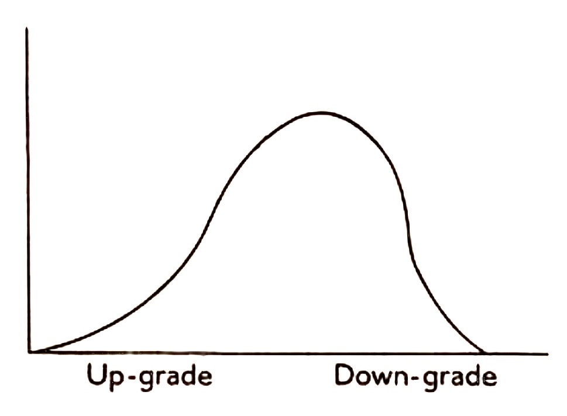
The water table in the whole area fluctuates from year to year; the hollows usually are fairly wet and often whole areas of polygons are completely submerged. During these submerged periods the hummock formation appears to be initiated by Carex aquatilis which invades the rocky intervals of the polygons. The general sequence of events is shown in Fig. Fig. 4.3. Following the establishment of C. aquatilis, Sedum rhodanthum and several bryophyte species become established. Eventually these species are replaced by Geum turbinatum and Polygonum viviparum which form a closed turf with other additional species on the mature hummocks. The erosion commences at this stage of the cycle and subsequent drowning of polygons initiates the next cycle. Thus there is a continuous cycle of change, hummocks alternating with the centre of polygons and the margin of the polygons alternating with subsequent hummocks. The general phasic development of this cycle is strikingly similar to the hummock and hollow cycles discussed by Watt (1947a). The mechanism is partly different and the species involved obviously different, but the same general principle is common to all three cases. The pioneer phase in this instance is dominated by Carex aquatilis, the building phase by Carex and Sedum and the mature phase by Geum and Polygonum.
Marginal effects
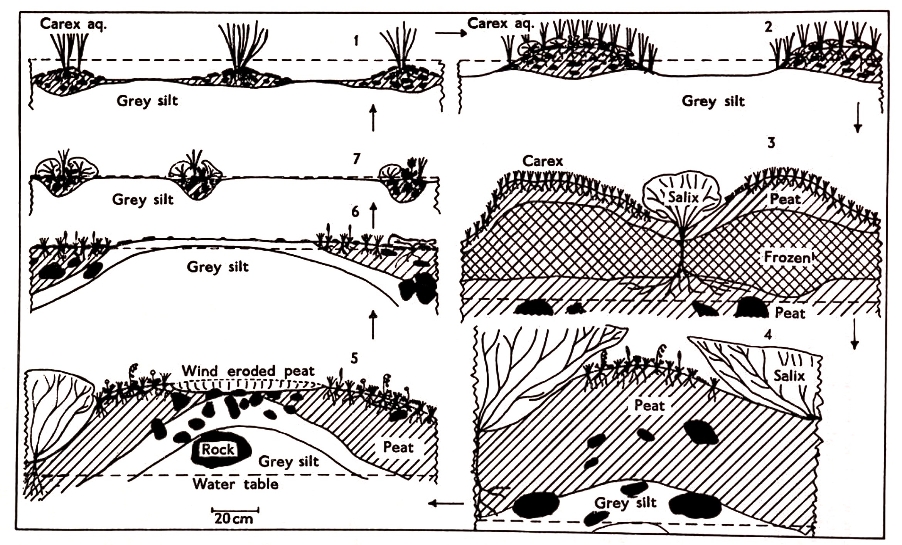
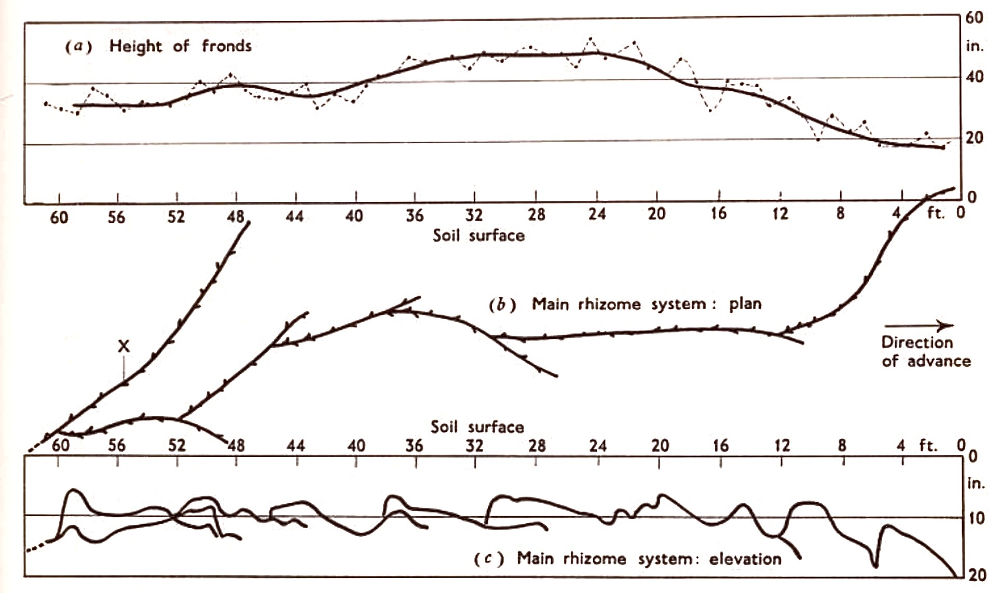
| In grassland | In zone of maximum height |
In dense uniform bracken |
In hinterland | |
|---|---|---|---|---|
| pH | 4.2 | 4.0 | 3.8 | 4.0 |
| Carbon per cent | 1.785 | 1.425 | 1.740 | 1.610 |
| Carbon / Nitrogen | 19.40 | 19.79 | 19.12 | 19.63 |
| Exchangeable Calcium (marginal effect) | 1.44 | 1.28 | 1.28 | 1.36 |
| Total exchangeable bases | 2.40 | 2.00 | 1.61 | 1.61 |
The significant feature is the progressive increase of rhizome age back from the margin to the hinterland where the oldest part of the rhizome decays and lateral shoots become separated as individuals. Thus the margin has a large number of young even-aged rhizomes orientated parallel to each other. These younger parts of the rhizome produce larger and more vigorous shoots resulting in the marked marginal effect. Conversely in the hinterland the rhizomes are initially much older and the shoots smaller. As the main rhizome decays lateral shoots of different ages are separated as individuals, each of which will subsequently follow the same progressive change of vigour as each individual ages. Thus the hinterland consists of very unevenly aged groups of individuals at all stages of the cycle, forming a mosaic of phases. In addition to the height of frond being at its maximum in the mature phase the length of petiole above ground follows the same trend and the length of petiole below ground level follows an inverse trend (Fig. 4.5). There is a marked relationship between the age of the rhizome and its morphology, and also between the vigour or pertormance ot the aerial shoots trom young and older parts of the same rhizome. This feature may explain the onset of the downgrade stage of the cyclic phases outlined above. As the principal species of the mature phase age, their performance falls markedly and the degenerate phase commences.
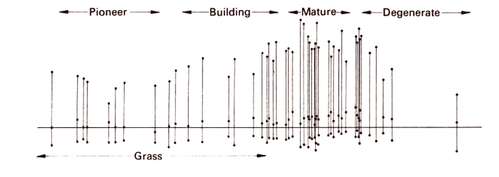
The general occurrence of a phasic development of perennial plants is indicated from the numerous reports of marginal effects in the literature. Kershaw (1962a) describes as very marked marginal effect in Eriophorum angustifolium invading a Salix herbacea| Polygonum viviparum community in central Iceland. The density and performance (expressed as leaf length, leaf width and length of leaf tip) both show a similar relationship to the advancing front in Pteridium described by Watt (Fig. 4.6).
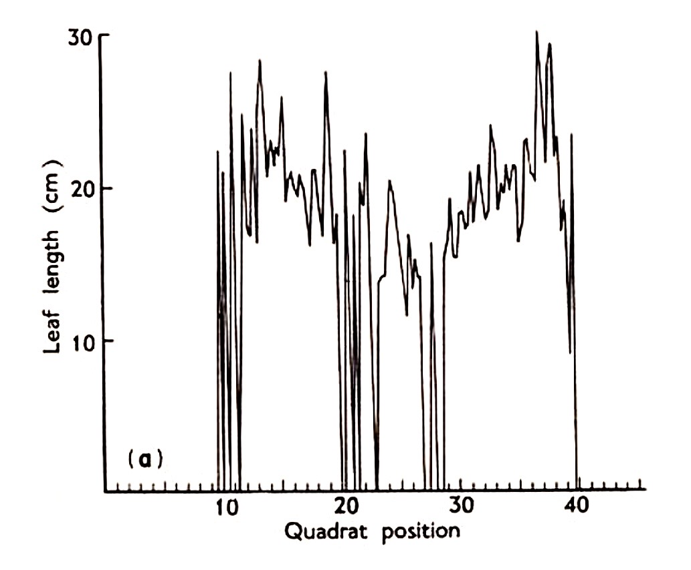
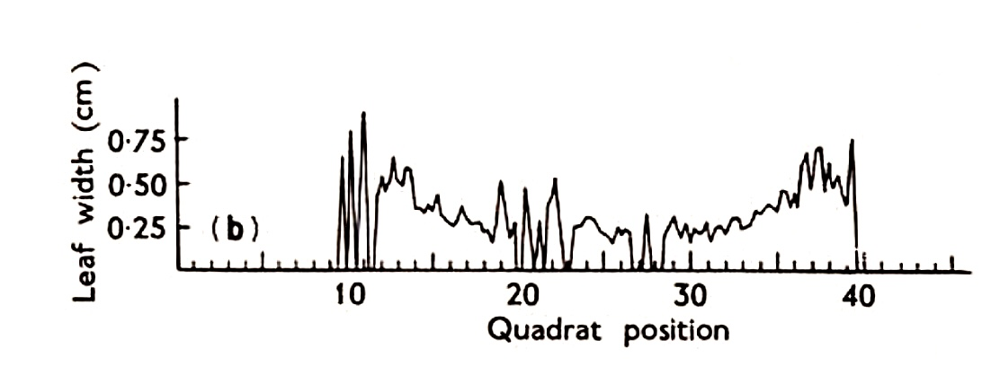
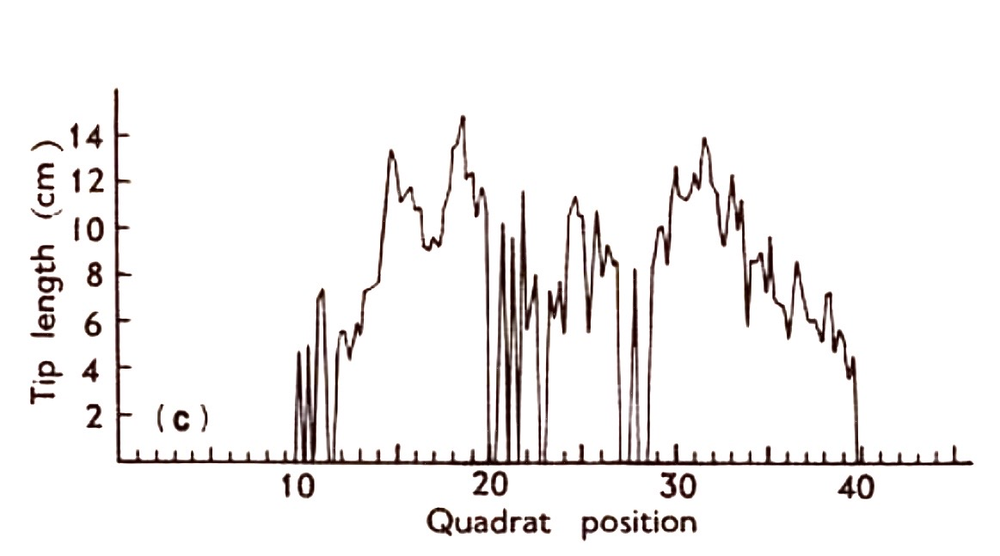
Similarly Ovington (1953), Caldwell (1957) and Pénzes (1958, 1960) have described numerous examples of advancing fronts of even-aged rhizomes at an optimum level of performance relative to the hinterland with its very much lower level. Watt (1955) shows that Calluna follows the same phase development and furthermore where Pteridium is present there is an inverse relationship between the two species. Where Calluna is at its building/mature phase, competing bracken is at its minimum development. Similarly where Calluna is in its degenerate phase, bracken is at the building or mature phase. Thus concurrently the competitive ability changes with the phasic series pioneer, building, mature and degenerate. The phasic development of Pteridium and Calluna have been confirmed by Anderson (196la, 1961b) and Nicholson and Robertson (1958).
The interaction between phasic development of perennial species and their competitive ability has been well documented by Watt (1981) who monitored the fluctuating abundance of a number of grassland species between 1936 and 1973 following the cessation of rabbit grazing. The changes are summarized in Fig. 4.7 for the three dominant species, Festuca ovina, Hieracium pilosella and Thymus drucei. The change of abundance of each species is primarily related to the year it enters the plot and secondarily to differences in their competitive abilities. Each species differs specifically in its life-form of course, but also the level of competitive ability changes continuously as a function of the stage of phasic development of each component.
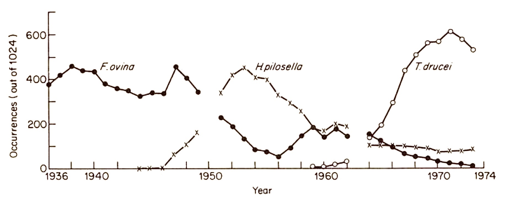
Thus the original population of Festuca ovina at the start of the experimental period was in the mature phase and since its early and degenerate phases are both susceptible to frost-heaving the initial population increase, subsequent decline and the final increase are a response to the initial release of grazing pressure, a cumulative sequence of severe winter frosts, and a final sequence of more moderate winter periods (1947-48) respectively (Fig. 4.8). The final decline of Festuca coincides with its degenerate phase, and is presumably accelerated by the competitive vigour of Hieracium. Subsequently the variation of macroclimate from year to year has no appreciable effect on the curve of abundance change in Hieracium which simply progresses through the classically upgrade and downgrade cycle, or pioneer, building, mature and degenerate phase of Hieracium which exposes bare soil and allows the entry of seedling individuals of Thymus drucei. Watt 1981) suggests however the supression of Hieracium pilosella also appears to involve active competition between the two species and is not solely a function of the degenerate phasic stage reached by the even aged Hieracium.
Thus we now have long-term data that clearly confirms the importance of phasic vegetation cycles probably mediated through corresponding cycles of competitive ability. It is also very probable that some of the demographic changes discussed in Chapter 6 similarly involve phasic changes of perennial species.
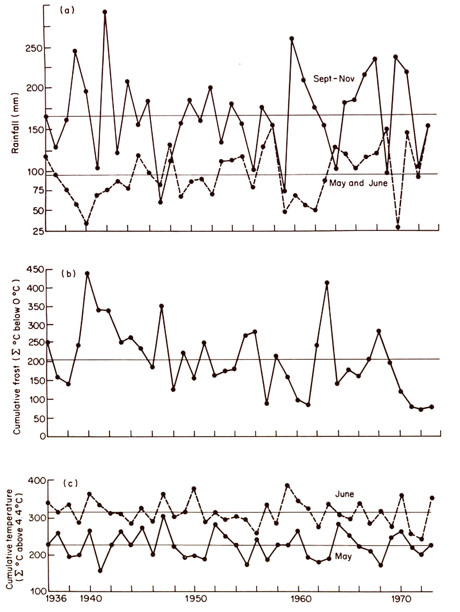
Interaction of age and performance
Confirmation of the relationship between age of an individual and its competitive ability is given by Kershaw (1962a and c). The effect of the advancing front of Eriophorum (see above) was related to the density of Salix herbace, the density of Salix being inversely related to the density and performance of Eriophorum (Fig. 4.9). In effect where the density of Salix was at a minimum Eriophorum had a maximum level of performance and abundance, indicating the greater competitive ability of Eriophorum in its building and mature phases. Thus in general terms there exists a direct relationship between age, performance and competitive ability, potentially, for most if not all perennial plants.
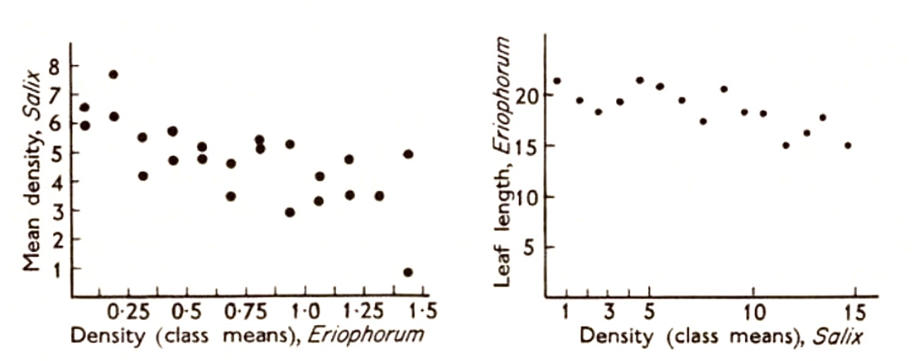
The quantitative assessment of the age/performance relation presents some difficulties since it is often impossible to determine the age of most herbaceous perennials. Data for two species only are available (Kershaw 1960b, 1962c), for Alchemilla alpina and Carex bigelowii the assessment of age being based on ring counts and the rhizome morphology respectively. The mean leaf diameter and leaf number per individual of Alchemilla were used as a measure of performance, each individual being aged by a count of growth rings. A considerable variation of performance is present (Fig. 4.10) between individuals of the same age reflecting local environmental effects, but the total data show a clear rise and fall in the relationship between performance and age. A regression of the form \( \ Y \)=\( \ a \)+\( \ b \)\( \ x \) + \( \ c \)\( \ x^2 \) is highly significant and indicates the mature phase to fall within the age groups 9-15 years (Fig. 4.11a).
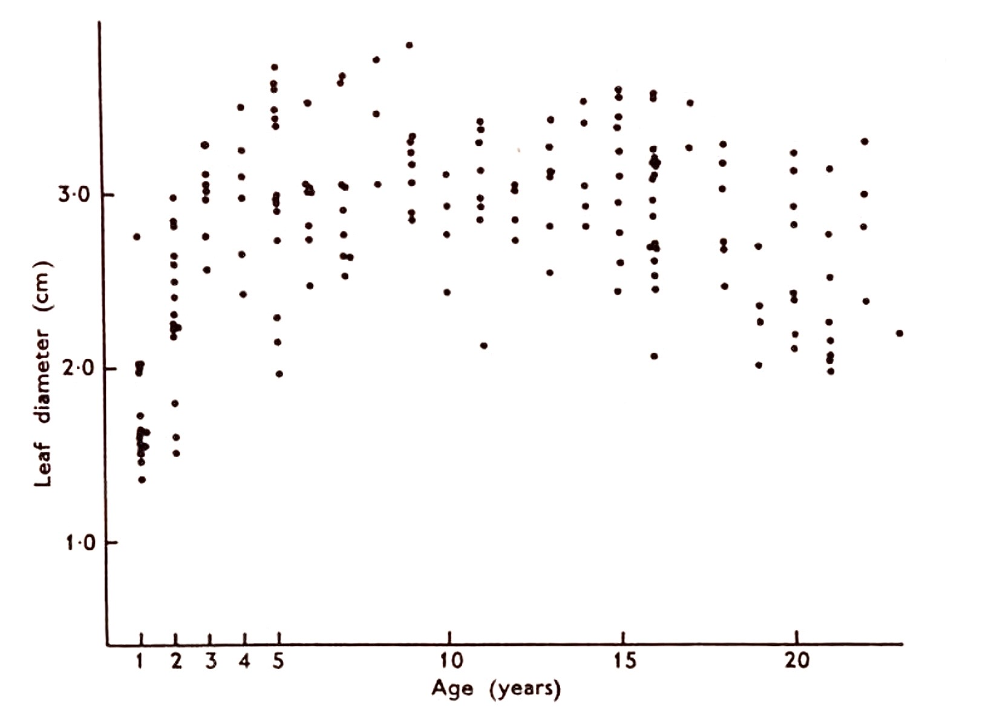
The relationship between leaf number and age is similar but with a larger scatter of values (Fig. 4.11b). The data clearly confirm the relationship initially proposed by Watt to describe the phasic development of Pteridium. The data for Carex bigelowii are similar (Fig. 4.12). Leaf length and leaf width are used as measure of the performance and the age of a rhizome system determined by careful morphological examination. At the end of a season's growth, the aerial parts die, the basal leaf sheaths remain as a humified knot on the rhizome and it is relatively straightforward to determine the age of a rhizome system with a tair degree of accuracy.

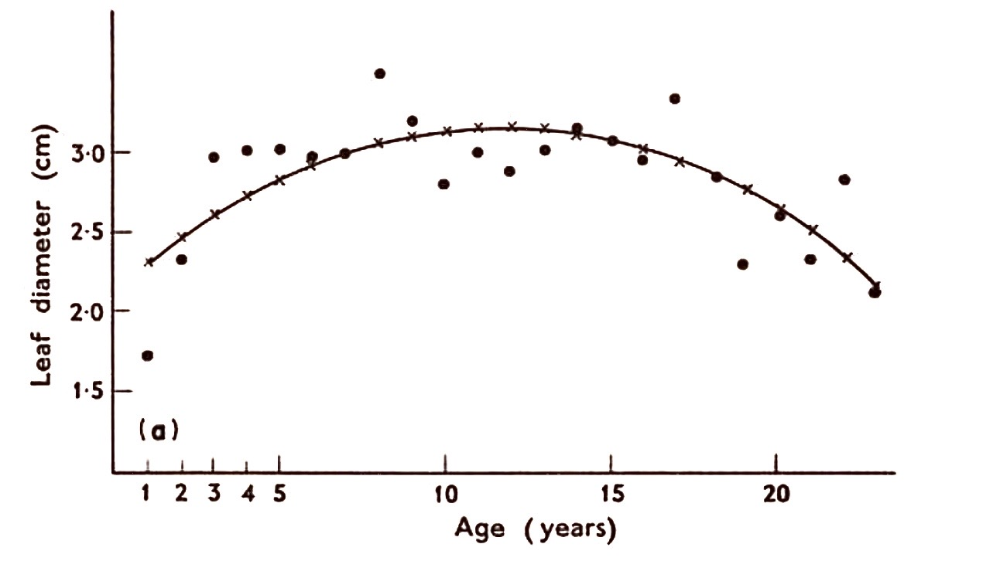
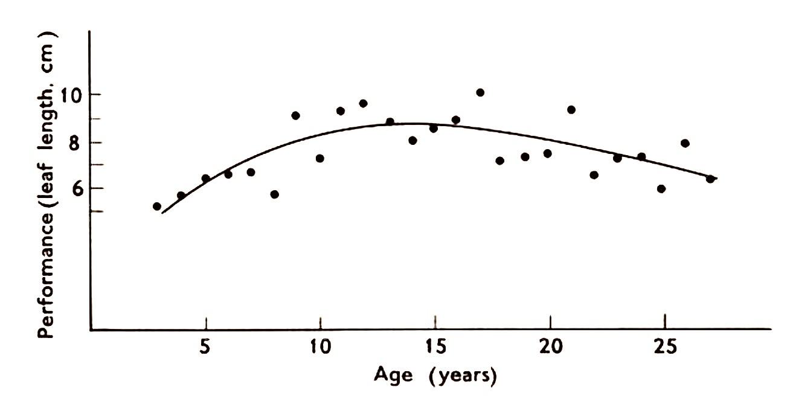
It seems highly probable that similar growth curves will exist for many other perennial species. For this reason phasic development and relationships between other species are likely to be widespread and the lack of additional evidence reflects the difficulties of detecting such cyclic relationships. Phasic development involving several species in a definite sequence seems unlikely to be as widespread as a mosaic of density phases reflecting the age/performance interaction with the attendant variation of competitive ability and the potential effects on associated species. Thus a stable community will be in a constant state of phasic fluctuation, one species becoming locally more abundant as another species reaches its degenerate phase, the fluctuation in density being however slight and not visually distinct. Only by careful quantitative measurement of abundance and performance can phasic developments be detected in vegetation where there is a complete cover, and then only in those species which possess some morphological or anatomical feature which enables their age to be assessed. Where the vegetational cover is discontinuous, and the but apparently rather uncommon. However, it is clear that this form of relationship is likely to be widespread and is the mechanism underlying the dynamic nature of vegetation. The initial demonstration of non-randomness in vegetation was somewhat surprising to the early workers in this field and they were at a loss to degenerate stage is eroded and followed by a 'bare' phase, cyclic relationships become visually more obvious account for it apart from consideration of morphology and localized seed dispersal (see Chapter 8). In the light of the evidence outlined above it is clear that a non-random distribution of individuals will always occur however uniform the environment, as long as several age groups are present.
Such patterns have been detected by Kershaw (1958; 1962b and c) in Agrostis tenuis, Calamagrostis neglecta and Carex bigelowii where small clumps of tillers a few centimetres in diameter are formed from different rhizome systems (p.153). A typical turf from upland rough grazing in Wales consisted of a mosaic of Agrostis tillers surrounded by Festuca and various bryophyte species, and in all cases the groups of Agrostis shoots arose from several different rhizome systems (Figs 8.15 and 8.16). The mechanism of this rhizome orientation is somewhat obscure but if any one group of tillers is considered in isolation over a period of time it follows a typical phasic development. Initially a group of young tillers is established from a tew pioneer rhizomes, representing the pioneer stage. The following year the clump produces several axillary shoots and is enlarged by the arrival further pioneer rhizomes; the building phase. In subsequent years this process is continued through a mature phase until there is a preponderance of dead tiller bases in the clump and the degenerate phase follows with increasing numbers of dead tiller bases and weaker aerial shoots. Finally the whole phase is represented merely by humified remains of shoot bases which can be found underlying a small patch of Festuca. By careful examination the different phases can be picked out by the size and colour of the leaves of Agrostis. The early phases have bright green small leaves, the building phase bright green and larger leaves with little evidence of dead leaf bases. The mature phase though similar has a number of dead leaf bases present, a trend which becomes increasingly evident in the degenerate phase where there is a preponderance of dead leaves with a few small and often yellowish-green aerial leaves.
The underlying mechanism of these varying levels of performance of individual plants and the corresponding relationship of their competitive ability has been obscure. However a fuller understanding of the competition for light by crop plants has been achieved (Donald, 1961) and these results seem to be of direct significance in this present context. If water and nutrients are in adequate supply, then light will become the limiting factor controlling rate of growth and the production of dry matter. In any stratified vegetation there exists a very sharp decline in light intensity from the surface layers downwards and very often the lowest leaves will make a negative contribution to the net assimilation of the whole 'canopy’ since the light intensity will be insufficient to keep them above compensation point. The respiration of these lower leaves in fact exceeds their photosynthesis. Expressing leaf area as a leaf area index (i.e. leaf area per unit of land area, it can be shown theoretically that if the relationship of photosynthesis to respiration is extrapolated for a continued increase of leaf area index, then a leaf area index will be reached at which the respiration of the whole canopy of foliage will equal its photosynthesis. Under natural conditions there is little evidence to suggest that this state is ever achieved in crop plants, but it seems more likely that perennial plants may reach this compensation point. From an ecological point of view it is this possibility which is of significance, since not only are the aerial parts of importance but the underground parts also. Thus a perennial plant with an extensive rhizome system has a large actively respiring volume with a relatively small (theoretically peripheral) zone of aerial shoots, and the compensation point is likely to be reached or exceeded in old individuals. Carex bigelowii is a case in point. A complete rhizome system 20 years of age will cover one square metre with a complex system of branches, each ultimate branch having a terminal aerial shoot and only one or two axillary shoots in the last two years' growth increment. In such a system it is very likely that the compensation point has been reached or exceeded and the plant is in its ‘degenerate phase'. Conversely a young plant of 6-12 years of age has a much less extensive rhizome system and with a normally developed leaf canopy is at its optimum level of growth.
Went (1957) has referred to the build-up of non-photosynthesizing tissues in old strawberry plants until the whole plant is barely at compensation point at a high light intensity and it seems probable that the ratio between the photosthesis and respiration of a perennial plant largely controls its general level of performance and its ability to compete with its neighbours. This possible explanation is equally satisfactory when applied to the parts of a fragmented degenerate individual. In Alchemilla, Agrostis, Pteridium and Carex the older parts of the rhizome slowly decay and as the zone of decay reaches a lateral branch this becomes separated off as an individual. The oldest plants of low peformance thus release ‘propagules’ with, initially at least, a low performance but with a morphologically optimal age. A propagule from a 25-year-old parent is likely to be 8-12 years of age. However the average performance of all individuals in this age group is optimal and accordingly it would appear that the level of performance of such a propagule immediately rises to its 'morphological age'. This seems quite logical when considered as a small rhizome system being severed from a very large system which was respiring actively. Immediately the photosynthesis/respiration ratio becomes unequal, the terminal leaves provide an excess of metabolites relative to the now small rhizome system, and active growth can take place at once.
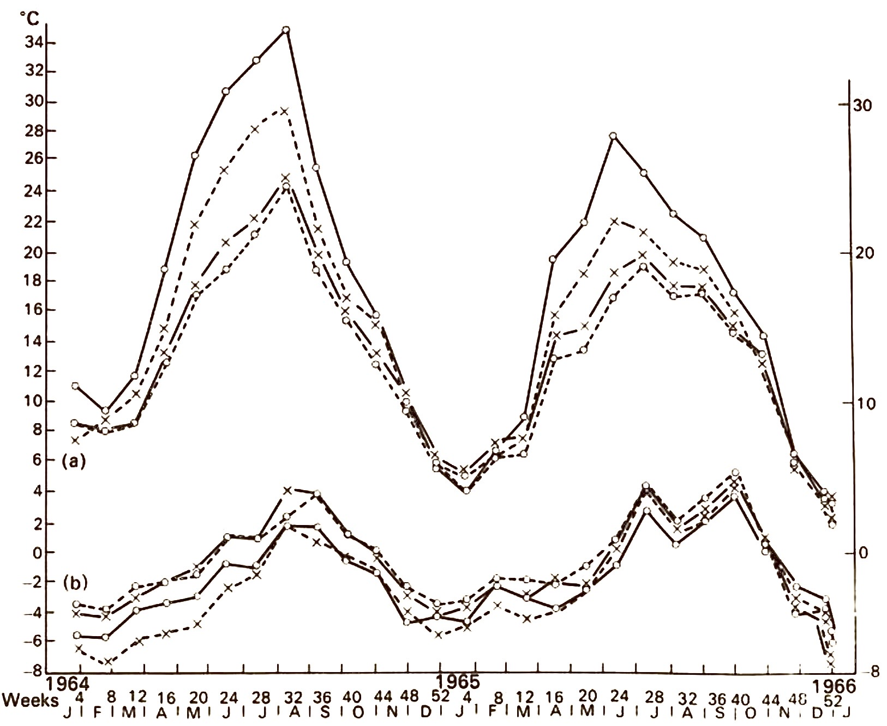
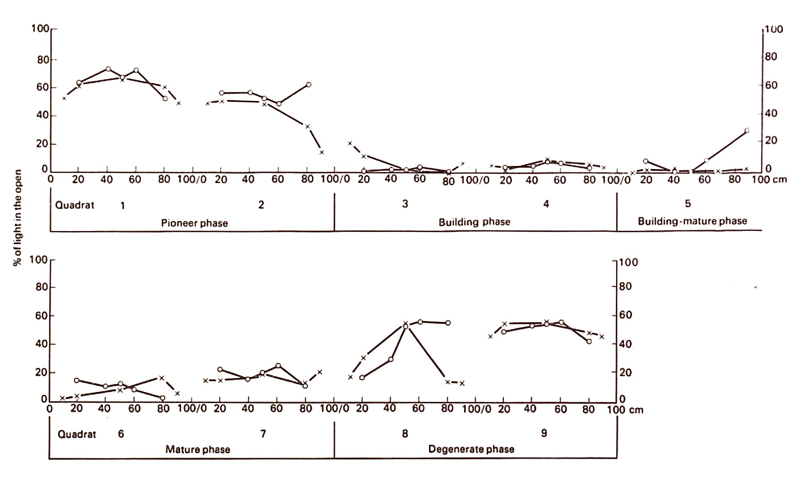
In all the cycles described above, the species involved are in one sense, part of a truncated succession. There is no directional change, the cycle eventually returning to its original position. However, just as in plant succession where there is a marked reaction of the species on the environment, there is a similar reaction on the environment throughout the cycle of phases. Furthermore, because of the phasic sequence the level of reaction will also vary sequentially. Barclay-Estrup (1971) examined the microclimate and its variation in relation to the phasic development of Calluna vulgaris (Watt, 1955), and showed the existence of considerable differences between the different phases. Soil surface temperatures during the summer months were much higher under the building phase than elsewhere and followed a decreasing sequence through the building phase and mature phase to the degenerate phase (4.13). Conversely in the winter months the lowest temperatures recorded are under the pioneer and degenerate phases where the low biomass of the Calluna allows a greater loss of radiant energy from the soil. Similar considerations apply to soil temperature although the differences are not as clear cut. Interception of light is also related to the phasic sequence and during the building/mature phases, the light at the soil surface falls to 10-20% of full illumination, as opposed to 60-80% in the pioneer phase. and 40-60% in the degenerate phase (4.14). Rainfall interception follows the same sequence with maximum interception by the canopy of the mature and building phases, decreasing through the degenerate phase to the pioneer phase where cumulative precipitation is fairly close to full precipitation measured in the open (4.15).
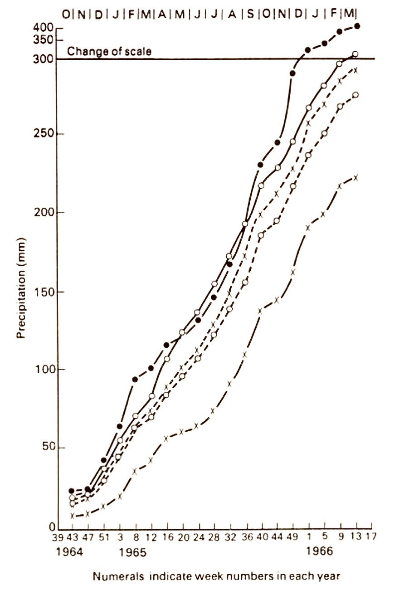
Clearly the microclimate at the soil surface varies markedly over a period of time in response to the phasic changes in the Calluna. In response to this mosaic of microclimate there is a development of corresponding mosaics of abundance levels in associated species (Fig. 4.16). Notably Vaccinum vitis-idaea, V. myrtillus, Empetrum nigrum, and the moss species Polytrichum commune, Pleurozium schreberi and Hylocomium splendens dominate the more open areas during the pioneer phase, disappearing during the building and mature phases, and reappearing again in the degenerate phase. These results amplify the previous discussion on cyclic phases as a causal mechanism of pattern in vegetation. Thus the phasic development of Calluna affects other associated species through its changing levels of competitive ability. This is evident as a direct interaction with the environment inducing a change in the microclimate. The resultant spatial patterns of the bryophyte species especially are controlled by this changing microclimate.
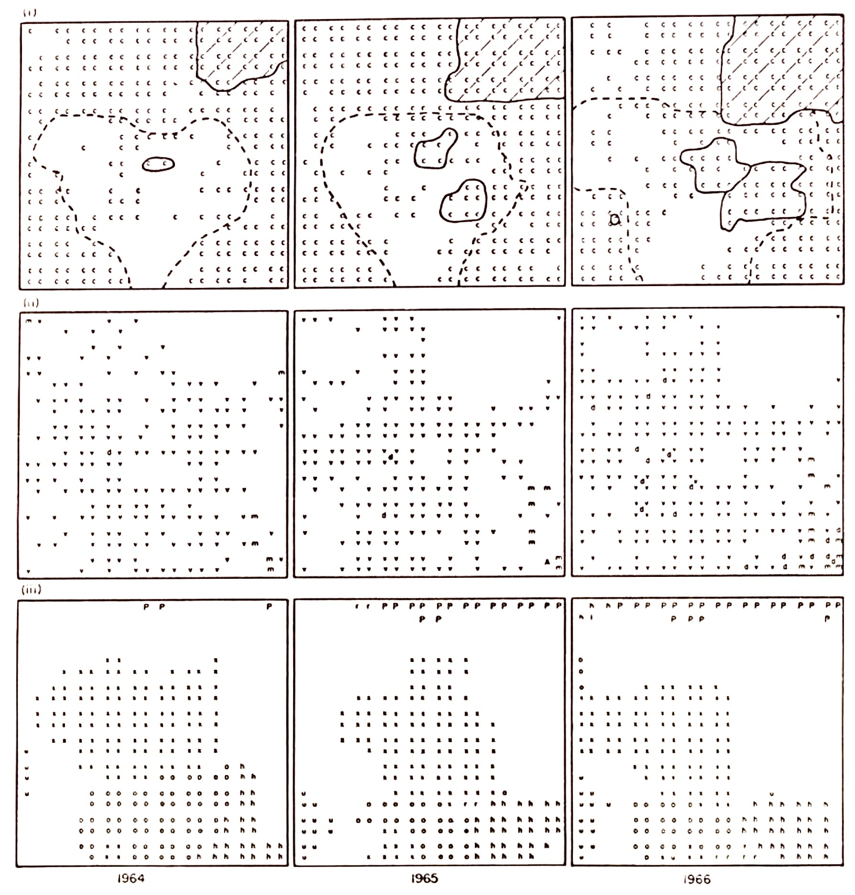